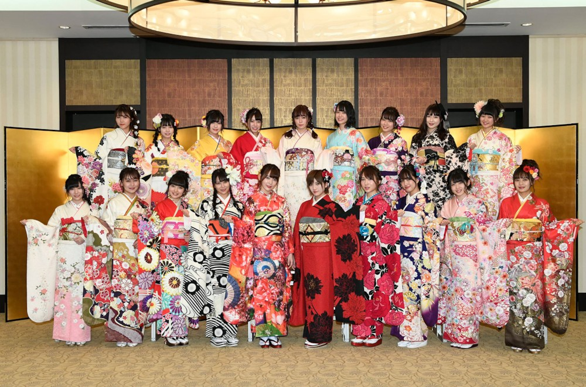
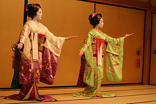

1.개요
일본의 가장 큰 특징은 섬나라라는 것이다. 한국은 19세기 이전의 시대까지는 대륙의 정세 변화에 따라 나라의 존망이 갈렸기 때문에 항상 대륙의 최신 유행에 민감하게 반응을 했었지만, 일본은 여유롭게 자신들만의 세계관을 구축하면서 외부 세계를 방관자적인 시선으로 관망할 수 있었다. 일본이 그 성깔 더러운 수나라에게 해 뜨는 곳의 천자가 해 지는 곳의 천자에게라는 무례한 편지를 보내고도 무사했던 게 대표적. 대륙에서 무슨 일이 일어나든 일본에서는 강 건너 불구경이었던 것이다. 그러다 보니 몽골 제국의 일본 침략은 사실 따지고 보면 태풍 때문에 후쿠오카 근처만 털고 끝났지만 일본인에게 있어서는 외계의 침공 수준의 충격이었던 것. 카미카제니 하며 호들갑을 떨었던 것도 이러한 이유 때문이다. (미국, 캐나다, 멕시코), (영국, 프랑스, 독일)이 서로 다르듯이 한국, 중국, 일본이 모두 지리적으로는 동아시아 국가들이지만, 무턱대고 하나로 엮는 건 불가능하다. 또한 섬나라라는 특징상 위엔 언급했듯이 독자적이지만 또 한편으로는 서구 문물을 받아들이는 데 적극적이라 우리 식으로 표현하자면 약간 짬뽕 같은 느낌도 받는다. 가장 적극적으로 서양 문물을 받아들인 나라임에도 예로부터 내려온 전통이나 문화 같은 것들을 굉장히 잘 유지하고 있다. 이는 메이지 유신 이후, 전통 문화를 갈아엎다시피 했지만, 빨리 갈아엎었던 만큼, 한국이나 중국 등보다 전통 문화에 대한 재인식도 빨랐기 때문이다. 아무튼 이런 것들이 서양으로 역수출되어 일본이라는 나라에 대한 확고한 이미지와 긍정적인 인식을 갖게 만드는 문화대국. 오키나와 지역은 일본 본토와 상당히 구별되는 문화를 지니고 있으므로 이쪽에 관해서는 오키나와/문화를 참고하기 바란다. 참고로 일본의 대중문화는 동아시아 곳곳에 영향을 미치고 있지만, 1990년대 후반까지 한국에서는 공식적인 유통은 금지되어 있었다. 다만 말이 그렇다는 것이고 실제로는 1960년대부터 일본에서 발행된 만화나 소설, 학술서적 등이 서점에 대놓고 돌아다니고 있었고 일본가수들의 음반도 불법이기는 하지만 어느정도 퍼지기도 했으며, KBS, MBC, SBS등 주요 지상파 방송사에서 일본 방송 프로그램 포맷도 암암리에 베끼거나 어린이 시간대에 일본 만화영화를 정기적으로 방영하는 것은 당국에서 제재하지 않는 등 눈 가리고 아웅에 가까웠다. 어쨌든 일본 문화콘텐츠가 암암리에 많이 퍼졌고 나름대로의 인기도 얻었기 때문에 오히려 이 때문에 대중문화 개방이 늦어졌다는 얘기도 나올 정도. 물론 공식적으로는 엄연히 금지였기 때문에 당시 일본 연예기획사나 출판사 등지에서 한국쪽에서 수입을 거두기가 힘들었기는 했다.2.일본인들의 대체적 성향
대체로 일본인은 칼같이 질서를 지키는 성향이 있다. 사실 일본에서는 검객이 권력을 잡았기 때문에 더욱 예절에 집착한다. 잘못하면 그대로 참살되기 때문이다. 국화와 칼에선 인간이 어느 정도는 제한이 있는 자유에서 편안함을 느끼듯, 일본인들도 이런 봉건적 계급차가 있고 평온하며 모든 일이 예측가능한 사회질서를 편안해 한다고 분석했다. 그래서 오사카인들을 특별히 별종 취급하는 경향도 있다. 역사적으로도 오사카는 상인들이 휘어잡은 곳이다. 또한 상공 계급은 봉건제도를 무너트리고 귀족을 허수아비로 전락시키기 때문이다. 거지 귀족과 대부호 상인중 상인이 좀 더 힘이 강한 게 사실이고 귀족이 함부로 상인가문을 베면 당연히 난리가 난다. 그래서 이렇게 억압된 듯(물론 일본인들은 억압되었다고 생각하지 않는다.) 한 분위기를 전혀 이해하지 못하는 사람들이 바로 오사카인이다. 하나 교토에서는 다르다. 이쪽은 한때 수도였기 때문에 예절에 엄청 집착한다. 그렇다고 사무라이가 아무에게나 검을 뽑은 줄 알면 오산이다. 적이 늘어나면 자신만 위험하기 때문이다. 자세한 사항은 사무라이 4번 항목 참조. 먼나라 이웃나라에선 영국을 함께 넣어 "스스로에게 엄한 것은 섬나라의 특징"라고 주장했다. 섬나라라서 다른 나라와 교류할 일이 별로 없다 보니 '자기들끼리 싸운다 → 다같이 망하기 딱 좋다 → 서로 간에 규칙 정립'이라는 이야기. 어찌되었건 이렇게 극도로 민폐를 혐오하는 그들의 문화를 '메이와쿠'라고 한다. 한국인의 성향과 상당히 대비되는 부분이 바로 여기에서 보여진다. 김선일 피살사건과 샘물교회 피랍사건이 발생했을때 한국에서는 '그래도 우리 국민인데 구해야하지 않겠느냐'는 여론이 강했으나, 일본에서 비슷한 사건이 일어났을 때에는 정부부처가 처음부터 딱 잘라서 테러집단과의 협상을 거부했으며, 대중들의 태도도 냉소나 무관심을 넘어 조롱, 비난으로까지 이어지는 경우가 대부분이었다. 여기에 피랍자의 부모나 가족이 기자들 앞에서 나와 '국민들께 불편을 끼쳐 대단히 죄송하다'며 고개숙이며 사죄하는 장면이 어김없이 등장한 것은 이러한 메이와쿠 문화의 일면을 보여줬다고 할 수 있다. 이런 문화가 형성된 이유를 섬나라라는 환경에서 찾는 경우가 많다. 그러나 필리핀이나 대만처럼 섬나라면서 외향적인 성격을 지닌 곳도 많다. 그리고 오사카나 후쿠오카에만 가도 한국인들만큼 외향적인 곳도 있다. 대체적으로 일본인 하면 친절하다는 이미지가 있는데, 실제로도 국민들이 대체로 친절한 편이며, 직원들도 마찬가지다. 심지어 우리나라에서는 불친절하기로 유명한 관공서 직원, 대학 교직원들마저도 친절하다. 덕분에 여행객의 만족도가 매우 높은 국가이다 (다만 친절한것과 절차가 답답한것은 다르다.) 예외가 있다면 일본 경찰. 아직도 시민들에게 반말하는 습관이 남아있는데다 대뜸 불심검문을 하고 수상한 취급 하는 등 자국에서도 이미지가 좋지 않다. 또한 특정한 개념(상식이라든지)에 얽매이지 않는 것도 특징. 오타쿠 문화가 흥하고 신토 신자가 절에 가는 등 그야말로 취향대로, 또 취향이니까 존중하는 태도를 보인다. 다만 오타쿠도 민폐라면서 몰아넣긴 한다. 취업을 하거나 살려고 하면 위의 문화 때문에 외국인이 적응하기 쉽지는 않은 편이다. 일본인들이 외국에 나가면 개방적이고 편한 기분이 든다는 말이 이해가 될 정도다. 일본인들 중에 사회적 활동을 그렇게 좋아하지 않고 자기만의 세계를 추구하는 사람들이 나오는 이유도 예의범절을 지키기가 상대적으로 너무 힘들기 때문이라는 분석도 있다. 위의 "다른 사람들에게 영향을 끼치는 일 전체에 메이와쿠가 적용된다."라는 말이 농담이 아니다. 작은 일도 생각보다 상당히 기분 나빠할 수 있으니 주의해야 한다. 물론 그런 생활들을 좋아하는 사람들은 생각보다 적응을 쉽게 할 수도 있다. 현대에 들어 고독사나 히키코모리 자살자에 대한 시선도 일반적으로 폐를 끼치고 죽은 낙오자 정도로 생각하는 사람들이 많아 좋지 않다. 지하철로 뛰어들어 자살했다거나 해서 남에게 폐를 끼치면 벌금행인 경우가 있다. 보수적인 시각을 가진 사람들은 자살자를 사회와 가정에 민폐나 끼치는 패배자로 규정하고 방치에 가깝게 놓아두려고 하며, 일본의 자살 방지 단체는 정부 지원을 못 받는 민간단체가 많다.3.왜래문명에 대한 태도
일본은 초창기의 신토를 중심으로 외래문명을 섞어나가는 식으로 외래문명을 흡수한다. 한국으로 치면 동도서기, 구본신참 정도의 개념으로 보면 된다. 이 경향은 현대 들어서도 외국의 적극적인 부분만을 따 흡수하는 방식으로 일본 경제를 세계 2위로 끌어올리는데 지대한 공을 세웠다. 지금이야 중국이 명목상 GDP를 제쳤지만 그래도 굉장히 높다. 일본의 경제 규모는 남한의 몇 배다. 이러한 경향을 '이이코토토리'(좋은 것 따오기)라고 한다. 널리 알려진 일본의 근대화를 제외하고도 꽤 전통적인 예로 상한론 학파의 번성 등을 들 수 있는데 당시 인기는 황제내경이 더 높았지만 황제내경은 무협지에 가까웠고 상한론은 그래도 실제 진료 기록이라 실질적으로는 상한론이 더 우수했다. 그러나 막상 본가인 중국에서는 상한론 계열은 인기가 많은 황제내경 계열에 완전히 개발려서 끌려다니고 있었고 오히려 일본에서 상한론을 따르는 학파가 번성하여 중국을 능가하는 업적들을 남겼다. 지금도 일본인들은 어떤 이론을 선택하면 그걸 정말 철저히 지키려고 하는 경향이 강해서 오히려 본국을 능가하는 진수를 보여주기도 한다. 물론 그에 따른 폐해도 없지는 않다. 그러나 외래문명의 장점을 따서 흡수하는 방식이 외래문명에 대한 전면적인 '개방성'이라고 생각하기는 좀 힘들다. 일본은 특유의 제노포비아로 외국인과 외래문명에 대한 거부감이 많다. 현대 일본의 예만 들어봐도 외국인에게 집을 안 빌려준다거나 Japanese only란 간판을 버젓이 걸고 영업하는 곳이 아직도 꽤 있는 편이다. 일본 사회의 전반적인 분위기는 외국(특히 개발도상국)에 대해 냉대적이고 보수적인 관계를 유지하는 경향이 있는 편이다. 외래문명을 '일본화'하여 흡수하는 탁월한 재주가 있긴 하지만 그 과정에서 분쟁이 없었던 것이 아니며 외래 문명에 대한 일본식의 이해가 그 문명의 진수를 흡수 통합하여 이해한다고 설명하긴 어렵기 때문이다. 이에 대한 근본적인 역사적인 차원에서 짚어보면, 일본인은 외래사상을 아래로부터 주체적으로 수용하기보다는 정치 지도자에 의해 위로부터 주어진 것에 순응해 온 경향을 보여왔고, 그러다 보니 종교든 사상이든 개인적이고 민중적인 뿌리는 상대적으로 약한 편이었다는 식으로 풀어 볼 수 있을 것 같다. 즉 이이토코토리의 문화와 외래문명에 대한 거부감이 공존하며, 그 과정에서 '일본화된 외래문명에 대한 이해'가 일본 주류의 태도라 봐도 무방하다. 물론 2000년대에 들어서는 (지금은 식었지만) 한류 붐이 일어났다거나 일본에서도 디즈니 애니메이션이나 스파이더맨, 어벤져스 등의 미국 슈퍼히어로물을 비롯한 미국 영화가 일본에서도 크게 히트하며, 이웃나라 한국을 비롯한 여러 나라와의 인적 교류가 활발해짐에 따라 외래문명에 대한 거부감이 예전과 비교하면 많이 사라진 편이라고 할 수 있겠다. 미국 중심의 큰 집, 큰 차 등의 많은 생산, 많은 소비를 특성으로 하는 생활 환경과 문화를 주로 즐기고 뉴요커 등 미국에 대한 동경이 있는 편인 한국과 달리 비교적 작고 소박한 유럽식을 굉장히 선호하는 경향이 있으며, 특히 영국과 프랑스, 독일에 대한 동경이 있는 편이다. 특히 영국이 지리적으로나 정치적으로 유사한 면이 많은 부분이 있는 이유도 있다. 그러나 꼭 좋은 면만 있는 건 아니라서 프랑스에 대한 동경의 폐해로 파리 신드롬이 있다.4.의복문화
 다른 나라와 마찬가지로 의복 문화 자체는 현대화/서구화되어 있다. 일상적인 의복에서는 한국과 큰 차이를 보이지 않고 있다. 젊은이들 사이에서는 로리타 패션이나 왕자계 등 상당히 개성적인, 본인들만의 의복 문화가 만들어지기도 한다. 이는 한국에 비해 다른 사람들의 의복에 크게 신경쓰지 않는 편인 일본의 풍토와도 어느 정도 연관이 있는 것으로 보인다. 전통 의상으로는 한국의 한복, 중국의 한푸와 마찬가지로 북방(알타이)계 복식을 근간으로 하고 있는 기모노라는 전통 복식이 존재한다. 특기할 만한 점으로는 기모노 자체가 구시대의 유물이 아닌, 새로운 패션 아이콘으로 떠오르고 있다는 점인데, 유카타가 젊은 계층 사이에서 인기를 끌고 있는 점을 예로 들 수 있다. 그런만큼 전통 복식의 현대화에 대한 디자이너들의 열정도 매우 강한 편이라 하겠다. 길거리에서 한복을 입은 사람을 거의 찾아볼 수 없는 한국과는 달리, 길거리에서 기모노를 입은 여성들을 종종 찾아볼 수 있으며, 여름에는 딱히 여름 축제날이 아니더라도 번화가에서 유카타를 차려입은 여성들을 쉽게 볼 수 있다. 서구권에서도 이러한 예를 찾기 드물다. 이쪽도 전통 의상은 정말 큰 행사가 아니면 자기 나라를 PR하기 위해 대외적 행사에서 일부러 입는 경우 밖에 없다. 평소 일상 생활에도 전통의상을 일본 이상으로 자주 입는 미얀마나 베트남, 아랍권 등 일부 지역 뿐이다. 맨발을 보이는 것이 터부시되는 한국과 달리 고온다습한 기후 때문에 이것이 큰 흠결이 되지 않는다. 연령과 계층을 가리지 않고 유카타를 입을 때는 맨발에 게다를 신는 것이 보통이며, 검도, 유도, 아이키도 등 일본을 종주국으로 하는 무술들이 맨발로 수련하는 점 또한 고온다습한 기후에 따른 복식문화다. 2000년 전으로는 상당히 패션이 진보한 나라였으나 그 뒤로 정체되어 아직도 지금 일본에 간다면 한국보다 오히려 개성있는 패션을 감상할 수 있다. 한국보다 소속감을 강조하는 유니폼 문화가 크게 발달한 것도 큰 특징이다. 일례로 버스기사들만 봐도 그렇고, 한국 같으면 그냥 자유롭게 입도록 풀어줄 분야에서조차 유니폼을 입도록 하는 경우가 꽤 많다.